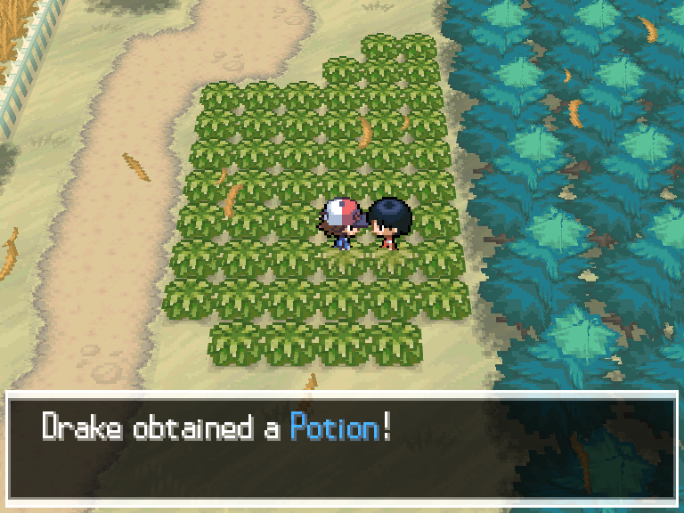

Pokéguide to Black & White Nuzlocke
Pokéguide to Black & White NuzlockeStarting in Nuvema Town!


If I had to rank the Unovan starters, I would, in order of best to not so best, go with:
- Tepig - Great offense and hit points, bad defences and speed. It's the only one of the three to gain a secondary typing and is the preferred starter for speedrunners.
- Oshawott - A jack of all trades, the balanced starter. Its worst stats are in special fefence and speed while its best is in special attack and physical attack.
- Snivy - It's fast and has good defences, but it has a rather limited movepool. Recommended for a slight challenge.
Now most people will say that the Nuzlocke rules don't apply yet until you obtain Pokéballs. If I lose in these first two battles with Bianca and Cheren, I won't count it because you can't prepare for these fights and it's basically up to chance whatever you win or not. You should try to win; an extra 1000 Pokédollars is really helpful.
After you talk to your mom, go to the house in the bottom-left. After that cutscene, go north and talk to Cheren. The Professor will explain about the Pokédex and will allow to nickname your starter.
The First Route
After Juniper teaches how to catch Pokémon, you are then given 5 Pokéballs. You have an equal chance of finding either a Patrat or Lillipup. Talk to the girl in the patch of grass to get a Potion.
A Mysterious Trainer?
You can do this anytime, but don't forget to talk to the man on the second floor of the top-left building to get a free Pokéball. When you're able to buy some items, buy Pokéballs in bunches of 10 to get a free Premier Ball. You can buy more types of items when you get gym badges. Go outside and towards that crowd or head back down to Route 1 for some training if you don't feel you're ready. A Lv.7 starter should easily beat N's Purrloin.